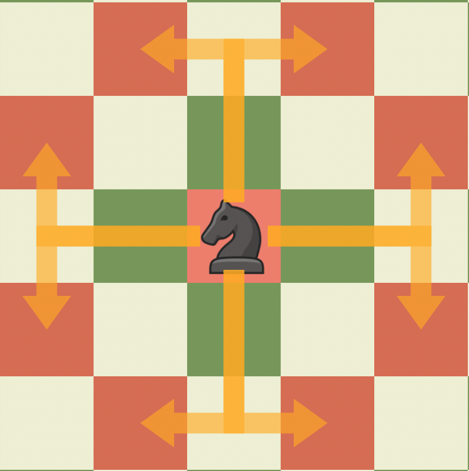
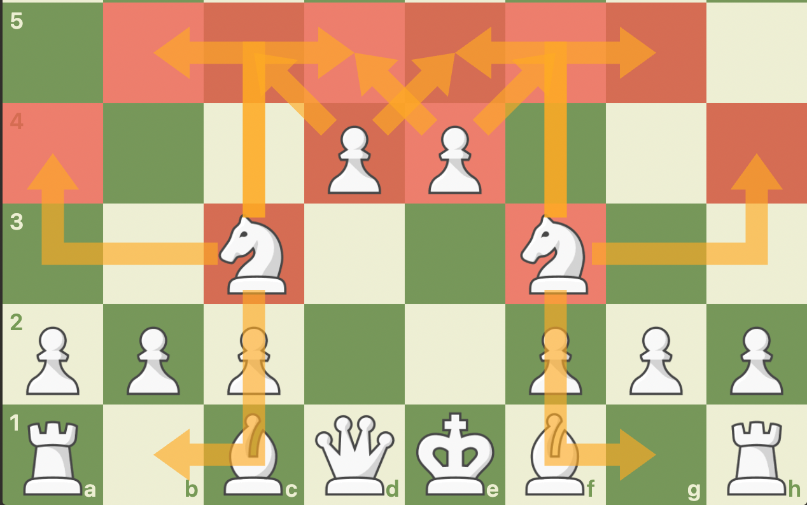

The unique and interesting pieces that hop over other pieces, The Knights!
The Knight is another piece that can be moved upon the start of a chess game, as it is able to move over other pieces! It is an imporatant piece to develop at the start of the game as it is able to control pieces that the pawns are not able to reach, therefore allowing for a stronger grip and control over the center of the board.
Although moving the knight at the start of the game is possible, I perfer to move the pawn initially to have more space in the center and then support my center pawns with my knights. These valiant warriors give stability to the game as a whole and give chess a more unique element. Without them the game would revolve only around staright lines and diagonals!
The Knight moves in an L shape. From it's starting position, it is able to move to two other squares, and it is able to, unlike the pawn, move backward!
But it is perferable to move your knights to the center, and in general don't move your pieces backwards unless necessary.
The Knight at its fullest extent is able to control eight squares, and since it can hop over pieces, planting it in a spot where it cannot be capured in the enemy territory (outpost) can allow you to restrict your opponent's position and piece activity.
Additionally, it pairs really well with the pawn in the center, as shown below:
If you want to learn more about the Knight, watch this video by chess.com!
Or click on the link below!
Let's move on with the...